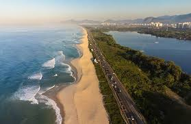
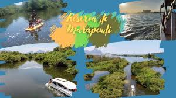
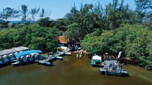
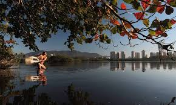
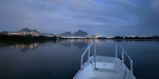
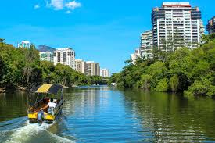
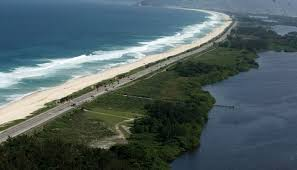

Passeio da Reserva
Um roteiro contemplativo por águas calmas e vegetação preservada no coração da Barra.








Sobre a Experiência
O **Passeio da Reserva** é o roteiro ideal para quem busca silêncio, contemplação e uma conexão profunda com a natureza. Afastado das rotas mais movimentadas, este trajeto leva você por canais estreitos cercados por uma vegetação nativa exuberante, onde o único som é o movimento das águas.
É uma jornada visualmente relaxante, perfeita para fugir do estresse urbano e recarregar as energias. Durante o percurso, a luz do sol entre as árvores cria reflexos cinematográficos na lagoa, tornando-se um momento inesquecível para apreciar sozinho, em casal ou com a família.
Destaques
- 🕊️ Paz e Silêncio absoluto
- 🌿 Vegetação nativa preservada
- 📸 Cenários cinematográficos
- 💧 Águas extremamente calmas
Informações
R$ 100 a R$ 180 /pessoa
Duração
Cerca de 50 minutos de desconexão total.
Consulte horários e saídas exclusivas.